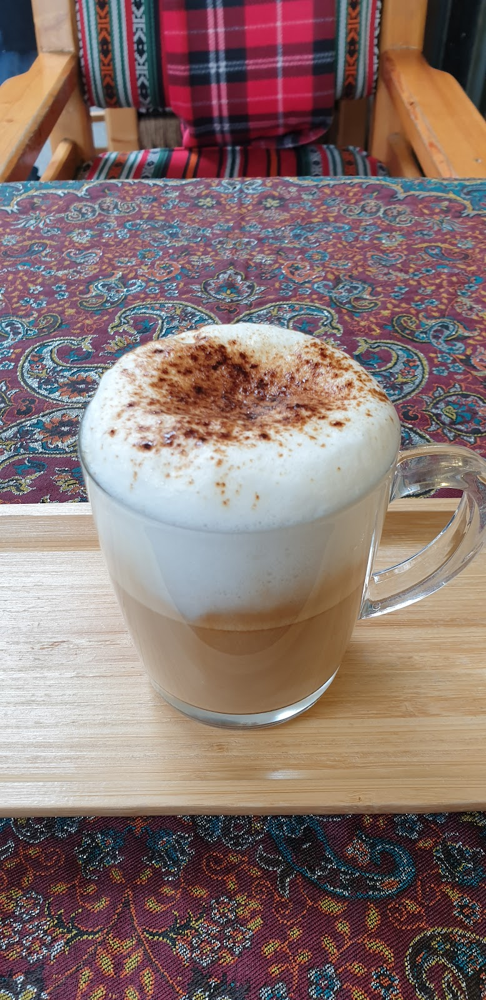
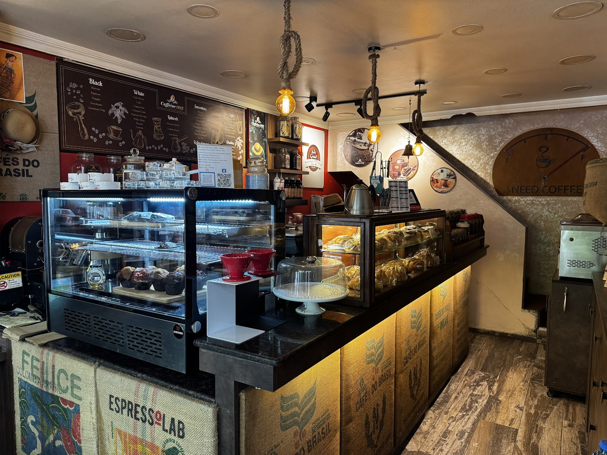

Caffeine 1922 كافيين 1922
★ 4.5 ·

1922
★ 4.5 ·
1922

1922
2017


Tasty coffee, cozy atmosphere, and very reasonable prices. Great staff, too, especially: Aya, Amer, Khalil, and Khaled (and the guy who closes at night. I do not know his name). Much appreciated for the kindness and hospitality.Ali Rida
Great authentic coffee spot with lovely decoration, super friendly service, and a strong caffeine dose. Highly recommended for coffee lovers.R M
Mar Elias Street, Residence 518, Beirut
+961 3 113 169
+961 1 375 234